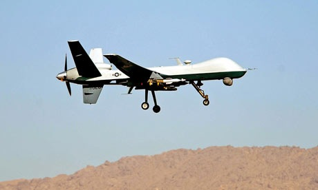
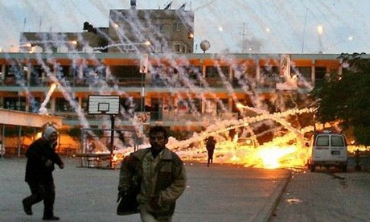
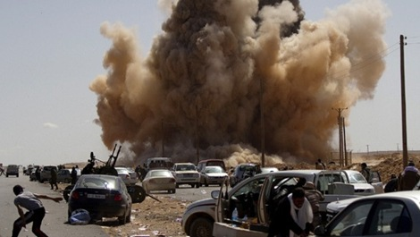

2011-07-27 08:00
When al Qaeda murdered 3000 civilians on our shores in 2001, it was clearly an act of terrorism we felt so deeply that it created in us a blind rage and irrationality that persists today. But quickly we forgot how deeply violence affects any of us as humans as we fashioned an inept, emotional response to a group of cave dwellers we ourselves had created. With the exception of bin Laden’s assassination, we have rarely been able to strike at al Qaeda itself, so we have waged instead proxy wars against half a dozen weak nations in the Middle East — the equivalent of being beaten up by a bully, then going home to slap your little brother around.

In the last decade we have seen American jets, drones, and aircraft carriers drop hundreds of thousands of bombs on hundreds of thousands of civilians in Iraq, Afghanistan, Pakistan, Yemen, Somalia, and Libya — at least, those are the nations we know about. And we Americans have defended Israel’s slaughter of over a thousand civilians in Gaza. Yet we never think of how deeply and for how many decades those who have never harmed us but whom we have harmed will hate us. And how this is the true wellspring of non-state terrorism
The real difference between terrorists and freedom fighters is highly subjective. If al Qaeda had an air force like ours, would it have been an act of terrorism to do what we ourselves are doing this week in Libya, or would we have seen it as an act of war? And, while on the topic of Libya, is the US/NATO intervention and support of Libyan “Contras” any different than Iran’s support to Muqtada al-Sadr in the early years of our second war of choice in Iraq? We call that “terror.”
When Ronald Reagan, his friends in the Argentine dictatorship at the time, and the CIA armed, funded, and organized Contras in Central America secretly, illegally, and in defiance of Congress, Reagan dubbed them “freedom fighters.” Yet the Contras were operating in opposition to a democratically elected government in Nicaragua. No matter, we only recognize democracies we choose to. Reagan was not the first.
When Hamas (which was voted in to power overwhelmingly by Palestinians, and which Israel declared war on the moment it unilaterally left Gaza) uses arms against Israel, it is deemed a terrorist organization. But why isn’t it terrorism when Israel bombs civilians in Gaza? Israel, which has disproportionate influence in American politics and is well-known for its many (and sometimes botched) assassination efforts throughout the world and its frequent human rights abuses, is our friend and of course their enemies (like Hamas) are our enemies. But Hamas poses no threat to the United States, and never has.

Please don’t misconstrue my following remarks. I don’t approve of bus bombings, the murder of the children of even the most violent Zionist settlers in Hebron, or unleashing Qassam rockets on some of my friends in Sderot or Ashkelon (who years ago actually used to go shopping in Gaza). But I don’t believe in murdering civilians. Period. But, please! Hamas is no more a terrorist organization than Israel or the United States — because each one of these parties has chosen to use violence in addition to whatever legal mandate they have, and all end up murdering civilians. Some terrorism “experts” lump Hamas in with al Qaeda (which is not a liberation organization but simply an anarcho-terror group). Yet over the years Hamas has actually been guilty of less civilian slaughter than Israel. It carries out fewer human rights abuses than the Contras ever did, and it was democratically elected, just like Netanyahu. Hamas even roots out extreme Salafist groups sympathetic to al Qaeda. If Hamas were an iceberg, its huge underwater portion (were it recognized by Israel and the United States, both of which refused to respect the results of the Palestinian elections) is its political wing. In many respects Hamas’ goal of getting Israel out of Palestine closely resembles Sinn Fein’s, whose goal was and still is getting the British out of Northern Island. Or the Kurdish independence movement, which wants to keep Turkey out of “autonomous” Kurdish areas and ultimately wants its own nation.
The bitter irony in all this is that the United States, which broke from Britain to create its own country and used a bit of terror to accomplish this, and Israel, which was founded on the Zionist goal of Jewish nationalism and whose founders actually used non-state terrorism against the British, seem to have lost any sympathy for self-determination. Both have expanded their bloated militaries into other nations. And in order to maintain their doomed empires, both regularly depend on state terror. “Collateral damage,” we are told, is unavoidable when protecting our way of life from non-state terrorists.

So terrorists come in all sorts of packages. George Bush famously listed Iraq, Iran, and North Korea as the “Axis of Evil.” But the true Axis of Evil consists of any nation that murders civilians. To this list we have to add the United States, Israel, and even Norway. Yes, even this tiny “peaceful” Scandinavian nation sent its jets to bomb targets in Afghanistan and Libya, almost always with civilian “collateral damage. What is”peaceful" then? What is “terrorism?”
The bottom line is: You don’t have to hijack an American Airlines flight and kill thousands to be a terrorist. The guys who do it best, do it regularly, and tax you for the privilege all have their own air forces. Yes, the best terrorists are state terrorists.